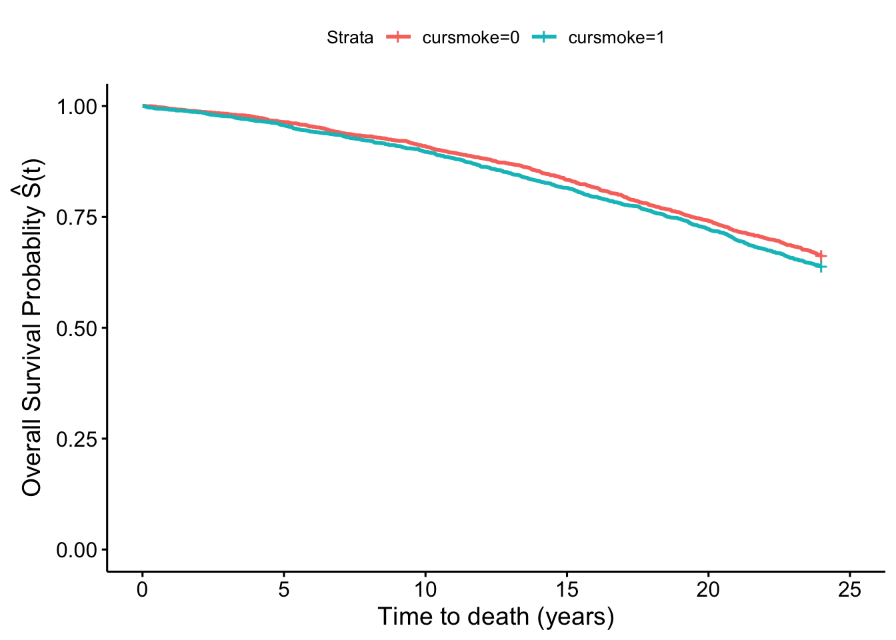
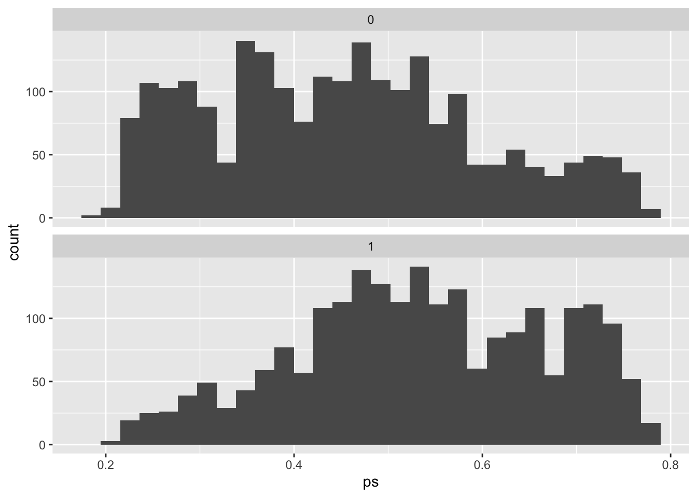

Chapter 8 Some approaches for confounding
8.1 Readings
The required readings for this chapter are:
Hernán and Robins (2020a): IP weighting for confounding adjustment and the concept of a Marginal Structural Model
Hernán and Robins (2020b): Propensity scores and outcome regression
There are also some supplemental readings you may find useful: The following is an instructional paper on constructing IP weights for marginal structural models:
- Cole and Hernán (2008)
This paper describes the use of propensity scores as an umbrella term for these types of approaches for covariate adjustment:
- Brookhart et al. (2013)
The following papers comment on the use of machine learning to improve or propensity score/weight estimation
while this chapter of the causal inference book explains the problem with traditional regression and exposure-confounder feedback
Lastly this paper offers a very good explanation on (non-)collapsibility:
- Greenland, Pearl, and Robins (1999)
8.2 Inverse probability weighting
We’ve already fit some Cox models with multiple covariates, where the interpretation of each parameter coefficient is conditional on the other parameters in the model, and typically these coefficients are expected to yield effect estimates unconfounded by the other variables in the model. In this section we will explore an alternative approach to confounding adjustment in inverse probability weighting (IPW).
Applied exercise: IPW for confounding adjustment
Using the FHS cohort data answer the following questions with repect to confounding of the potential effect of smoking on mortality and incident MI hospitalizations:
- Fit a conditional Cox model for the effect of smoking on mortality adjusting for sex and age using the limited (one observation per participant). Estimate inverse probability weights for smoking exposure and fit a Marginal Structural Cox model using the weighted population. How do the results of the two models compare?
- Plot survival curves for mortality and smoking status in the unweighted and weighted population. How do those curves compare?
- Using the time-varying dataset fit a conditional Cox model for smoking and MI hospitalizations adjusting for age, sex, BMI and blood pressure. Estimate time-varying inverse probability weights for exposure and fit a Marginal Structural Cox Model. How do the results of those two models compare?
Based on this exploratory exercise, think about what each approach is doing in terms of adjusting for confounding, and pros and cons for each in each situation.
Applied exercise: Example code
- Fit a conditional Cox model for the effec of smoking on mortality adjusting for sex and age. Estimate inverse probability weights for smoking exposure and fit a Marginal Structural Cox model using the weighted population. How do the results of the two models compare?
Let’s look back at our FHS data and reconstruct our simple models for current smoking status first unadjusted and then with age and sex also in the model.
## # A tibble: 1 × 4
## term hr low_hr high_hr
## <chr> <dbl> <dbl> <dbl>
## 1 cursmoke 1.43 1.19 1.73## # A tibble: 1 × 4
## term hr low_hr high_hr
## <chr> <dbl> <dbl> <dbl>
## 1 cursmoke 1.35 1.11 1.64The first model simply compares current smokers to current non-smokers in the population. It is not conditional on other variables, but also not adjusted for any potential confoudning by them. The interpretation of the (exponentiated) parameter for cursmoke in the adjusted model, is the Hazard Ratio comparing current smokers to current non-smokers conditional on age and sex. In other words this is the log-Hazard Ratio comparing currently smoking males of the same age to currently non-smoking males of the same age, and similarly currently smoking females of the same age to currently non-smoking females of the same age. This conditioning on other variables by including them in a regression model is often sufficient to adjust for any confounding by these variables and is the most widely used approach to adjust for confounding. In this example we see a much higher HR in the adjusted (conditional) model than the unadjusted.
One alternative approach to this is inverse probability weighting or IPW. IPW allows us to adjust for confounding without having to include additional variables in out final outcome model other than the exposure of interest. Instead we weigh each participant by the inverse of the probability that they had the exposure value they indeed had conditional on these other (potentially confounding variables). The quantity we are estimating is:
\[
W=\frac{1}{f[X|V]}
\]
where \(X\) is the exposure of interest and \(V\) is a vector for baseline confounders in this case age and sex.
Typically the weight estimation will involve a model for the exposure conditional on the potential confounders. Let’s go ahead and do this weight estimation for the above example using the fhs_first subset of the data. We will fit a logistic model for cursmoke conditional on age and sex which we will use to get predictions for the conditional probabilit of exposure:
## # A tibble: 3 × 5
## term estimate std.error statistic p.value
## <chr> <dbl> <dbl> <dbl> <dbl>
## 1 (Intercept) 3.84 0.218 17.6 1.37e-69
## 2 age -0.0514 0.00370 -13.9 8.06e-44
## 3 sex -0.839 0.0634 -13.2 6.04e-40We can see that these variables are significantly associated with current smoking status, however we are not going to be interpreting the parameter coefficients from this model. Instead, we will be using predictions based on this model to estimate our inverse probability weights:
fhs_first <-fhs_first %>%
mutate(p_smokobs=ifelse(cursmoke == 0, ###estimate the conditional probability that someone is unexposed or exposed from the model above
1 - predict(model_IPW, type = "response"),
predict(model_IPW, type = "response")),
w=1/p_smokobs)#### The weights is the inverse of the probability of exposure value
fhs_first %>%
summarize(mean_w=mean(w),
max_w=max(w),
min_w=min(w),
sum_w=sum(w))## # A tibble: 1 × 4
## mean_w max_w min_w sum_w
## <dbl> <dbl> <dbl> <dbl>
## 1 2.00 4.79 1.24 8871.The mean weight value is 2, so by using the weights we’ll on average be using 2 copies of each participant. Accordingly, the total sum of the weights is 8870 which is roughly double the number of participants we started with. This is because what the weights are doing in this example, is basically create a pseudopopulation where we have enough people so that everyone can be both exposed and unexposed while maintaining the distribution of covariates (here age and sex). The latter has to hold, because the pseudopopulation has to be representative of the original target population. We can check this by looking at the distributions of age sex in both the weighted and unweighted data.
## # A tibble: 1 × 2
## mean_age mean_agew
## <dbl> <dbl>
## 1 49.9 49.7## # A tibble: 1 × 2
## femalecount femalecountw
## <int> <dbl>
## 1 2490 4918.We see that the mean age is very similar in the original sample and in the pseudopopulation, while the number of females roughly doubles (as does the whole population), therefore approximately maintaining the initial proportion of females.
The great thing about the pseudopopulation is that the effect of cursmoke in no longer confounded by age and sex.
We can go ahead and fit a Cox proportional hazards model for cursmoke using our weights, and without including age and sex in the model.
###Fit Cox weighted model for current smoking status
coxph_modIPW<- coxph(Surv(timedth, death) ~ cursmoke, weights=w,
data = fhs_first)
coxph_modIPW %>%
tidy()## # A tibble: 1 × 6
## term estimate std.error robust.se statistic p.value
## <chr> <dbl> <dbl> <dbl> <dbl> <dbl>
## 1 cursmoke 0.313 0.0363 0.0532 5.88 0.00000000412coxph_modIPW %>%
tidy() %>%
filter(term == "cursmoke") %>%
mutate(hr = exp(estimate),
low_ci = estimate - 1.96 * std.error,
high_ci = estimate + 1.96 * std.error,
low_hr = exp(low_ci),
high_hr = exp(high_ci)) %>%
select(term, hr, low_hr, high_hr)## # A tibble: 1 × 4
## term hr low_hr high_hr
## <chr> <dbl> <dbl> <dbl>
## 1 cursmoke 1.37 1.27 1.47We see that the HR is very similar to before (they are not exaclty the same because of the non-collapsibility of the HR, more on this below). We also see that the CIs are actually narrower. This is because we are now using the pseudopopulation which is twice the number of the original population. A larger sample size means more power and by extension smaller standard errors, but in our case this larger sample size is artificial, not real and our CIs are misleadingly narrow. Rather than rely on the stanard erros from the model, we instead have to rely on robust variance estimators that counteract our artificially inflated sample size. We can do this, by using generalized estimation equations for clustered (correlated data). Our data are considered clustered, because of the multiple copies for each participant (randid). If we repeat the above model with a cluster term for randid this will invoke a robust sandwich variance estimation.
We mentioned that the HR is non-collapsible. What this means is that a conditional estimate of the HR for an exposure of interes within levels of another predictor of the outcome is not collapsible as a marginal estimate (over all levels of the predictors) even in the absence of confoudning. In other words if age was a predictor of the outcome (mortality increases with increasing age), but was not associated with the smoking, we would still expect the HR for smoking to change after adjusting for age (here it would be higher). Therefore in our example where age is in fact a confounder, even if we assume that our MSM based HR takes care of all confounding by age, we still don’t necessarily expect it to be the same as the conditional HR from the model controlling for age due to non-collapsibility of the HR. Non-collapsibility is a property of parameters based on the hazard, rate and odds, but not the risk. See the paper by (Greenland, Pearl, and Robins 1999) for more on collapsibility.
coxph_modIPW<- coxph(Surv(timedth, death) ~ cursmoke, weights=w, cluster = randid,
data = fhs_first)
coxph_modIPW %>%
tidy()## # A tibble: 1 × 6
## term estimate std.error robust.se statistic p.value
## <chr> <dbl> <dbl> <dbl> <dbl> <dbl>
## 1 cursmoke 0.313 0.0363 0.0532 5.88 0.00000000412We now have to use the robust.se rather than std.error to construct our CIs:
coxph_modIPW %>%
tidy() %>%
filter(term == "cursmoke") %>%
mutate(hr = exp(estimate),
low_ci = estimate - 1.96 * robust.se,
high_ci = estimate + 1.96 * robust.se,
low_hr = exp(low_ci),
high_hr = exp(high_ci)) %>%
select(term, hr, low_hr, high_hr)## # A tibble: 1 × 4
## term hr low_hr high_hr
## <chr> <dbl> <dbl> <dbl>
## 1 cursmoke 1.37 1.23 1.52The CIs are now wider than before and more akin to the width of the CIs from the original conditional model. This weighted model is essentially a Marginal Structural Cox Model. Marginal Structural Models (MSMs) refer to models that are marginal or unconditional with respect to some covariates, as is the case of our model with respect to age and sex. The interpretaton for the Cox MSM hazard ratios is no longer conditional on age and sex or in other words we are not looking for effects within levels of age and sex. We are however still adjusting for confounding by these variables. It is also structural because we are essentially modeling counterfactuals (the result of the weights gives us enough participants so that everyone (from the original 4434 participants) can be exposed and unexposed). MSMs are essenctially considered causal models though the causal interpretation relies on several assumptions (exchangeability, consistency, positivity, no information bias, correct model specification). In our case if there exist more confounders other than age and sex (likely) then the exchangeability assumption fails.
The use of weights and introduction of a counterfactual framework also changes the interpretation of the HR from a mere comparison of smokers and non-smokers in the population to a comparison of what would happened if everyone in the population was a smoker to what would have happened if no one was a smoker.
- Plot survival curves for mortality and smoking status in the unweighted and weighted population. How do those curves compare?
Using the weighted pseudopopulation we can also construct survival curves comparing what would happen if everyone had been a smoker and what would happen had no one smoked, that are inherenelty adjusted for any confounding by age and sex. We did fit survival curves comparing smokers and non-smokers in the unweighted data that were unadjusted in 7.3:
fit_smoke <- survfit(Surv(timedthy, death) ~ cursmoke, data = fhs_first)
fit_smoke %>%
ggsurvplot(xlab = "Time to death (years)",
ylab = expression(paste('Overall Survival Probablity ',
hat(S)*"(t)")))
In the weighted pseudopopulation:
fit_smokeW <- survfit(Surv(timedthy, death) ~ cursmoke, weights=w, data = fhs_first)
fit_smokeW %>%
ggsurvplot(xlab = "Time to death (years)",
ylab = expression(paste('Overall Survival Probablity ',
hat(S)*"(t)")))
We see that there is a difference in the two plots, with the smokers and non-smokers having quite similar survival curves in the first one, but a separation in the second one that again in inherently adjusted for confounding by sex and age.
- Using the time-varying dataset fit a conditional Cox model for smoking and MI hospitalizations adjusting for age, sex, BMI and blood pressure. Estimate time-varying inverse probability weights for exposure and fit a Marginal Structural Cox Model. How do the results of those two models compare?
Now let’s revisit the time-varying dataset we created and fit a conditional model for time-varying smoking status and MI hospitalization adjusted for age, sex, BMI and systolic blood pressure.
coxph_modtvMI <- coxph(Surv(time, timemi2, hospmitv) ~
cursmoke + ns(bmi, df = 3) + ns(sysbp, df = 3) +
age + sex,
data = fhstv_incMI)
coxph_modtvMI %>%
tidy()## # A tibble: 9 × 5
## term estimate std.error statistic p.value
## <chr> <dbl> <dbl> <dbl> <dbl>
## 1 cursmoke 0.588 0.109 5.40 6.77e- 8
## 2 ns(bmi, df = 3)1 0.942 0.391 2.41 1.59e- 2
## 3 ns(bmi, df = 3)2 0.241 1.57 0.154 8.78e- 1
## 4 ns(bmi, df = 3)3 -0.377 1.43 -0.263 7.92e- 1
## 5 ns(sysbp, df = 3)1 2.06 0.414 4.97 6.67e- 7
## 6 ns(sysbp, df = 3)2 4.85 1.62 2.98 2.84e- 3
## 7 ns(sysbp, df = 3)3 3.77 1.05 3.59 3.30e- 4
## 8 age 0.0322 0.00655 4.92 8.60e- 7
## 9 sex -1.15 0.114 -10.1 3.43e-24coxph_modtvMI %>%
tidy() %>%
filter(term == 'cursmoke') %>%
mutate(hr = exp(estimate),
low_ci = (estimate - 1.96 * std.error),
high_ci = (estimate + 1.96 * std.error),
low_hr = exp(low_ci),
high_hr = exp(high_ci)) %>%
select(term, hr, low_hr, high_hr)## # A tibble: 1 × 4
## term hr low_hr high_hr
## <chr> <dbl> <dbl> <dbl>
## 1 cursmoke 1.80 1.45 2.23One concern from this model is that BMI and systolic blood pressure maybe mediators for the effect of smoking on MI hospitalizations, in which case we wouldn’t want to control for them. However, given the time-varying nature of the exposure, BMI and systolic blood pressure may also be confounders if they have an effect on who changes smoking status in the future. This creates an exposure-confounder feedback, with the confounder causing the exposure and the exposure in turn having an effect on the confounder a later time point. Traditional regression approaches are not adequately equipped to handle this type of confounding, however IPW (and some other approaches) can adjust for confounding without blocking any mediating pathways.
In this time-varying setting the inverse probability weights will also be time-varying and the quantity is \[ W=\prod_{t}\frac{1}{f[X_{t}|\bar{X}_{t-1},\bar{C}_{t-1},V]} \] where at each time point (period) the weight is the cumulative product of the inverse of the probability of the exposure value at each time point \(X_{t}\) conditional on the history of past exposures \(\bar{X}_{t-1}\) and covariates \(\bar{C}_{t-1}\) up to the previous period as well as the baseline covariates. In our case the time varying covariates \(C_{t}\) are BMI and systolic blood pressure, while baseline covariates \(V\) are age and sex.
In order to estimate these weights we would have to lag exposure, BMI and systolic blood pressure in order to predict current exposure \(X_{t}\) using past exposure and covariate values \(X_{t-1}\) and \(C_{t-1}\). We are omitting the overbars denoting history as we will assume the most recent value from the past is adequate to represent exposure and coviariate histories.
fhstv_incMI<-fhstv_incMI %>%
group_by(randid) %>%
mutate(cursmoke_l1=lag(cursmoke),
cursmoke_l1=ifelse(period==1, cursmoke, cursmoke_l1), ###we are setting the lagged smoking status variable to equal the present smoking status value (we are assuming smoking status didn't change right at the beginning of follow-up)
bmi_l1=lag(bmi),
bmi_l1=ifelse(period==1, 0, bmi_l1),
sysbp_l1=lag(sysbp),
sysbp_l1=ifelse(period==1, 0, sysbp_l1)) %>%
ungroup()Furthermore as we are assuming an order where smoking is a cause of BMI and systolic blood pressure at each time period, we don’t have BMI and blood pressure values to predict exposure at period 1. We have set those to zero above, so we can actually get a prediction for the probability of exposure values at this period based on the baseline variables values. We will also inclue time in the model, as in this time-varying setting it’s safe to assume that time-varying variables are a function of time.
mod_tvIPW<-glm(cursmoke~ns(time, df=2)+age+sex+cursmoke_l1 + ns(bmi_l1, df=2)+sysbp_l1, family=binomial, data=fhstv_incMI)
mod_tvIPW %>%
tidy()## # A tibble: 9 × 5
## term estimate std.error statistic p.value
## <chr> <dbl> <dbl> <dbl> <dbl>
## 1 (Intercept) -1.09 0.288 -3.80 1.47e- 4
## 2 ns(time, df = 2)1 1.14 2.22 0.515 6.06e- 1
## 3 ns(time, df = 2)2 -0.690 0.421 -1.64 1.01e- 1
## 4 age -0.0368 0.00484 -7.62 2.59e-14
## 5 sex 0.0273 0.0791 0.346 7.30e- 1
## 6 cursmoke_l1 5.72 0.0979 58.4 0
## 7 ns(bmi_l1, df = 2)1 -2.97 1.88 -1.58 1.13e- 1
## 8 ns(bmi_l1, df = 2)2 -2.22 0.868 -2.56 1.06e- 2
## 9 sysbp_l1 -0.00117 0.00239 -0.491 6.23e- 1Most of the above variables look like they are significant predictors of exposure. However, once again we are not interpreting the paramater coefficients of this model, we are only using it for prediction.
fhstv_incMI <-fhstv_incMI %>%
group_by(randid) %>%
mutate(p_smokobs=ifelse(cursmoke == 0, ###estimate the conditional probability that someone is unexposed or exposed from the model above
1 - predict(mod_tvIPW, type = "response"),
predict(mod_tvIPW, type = "response")),
w_i=1/p_smokobs,#### This is the first step
w=cumprod(w_i)) %>% ### the second step gives us the cumulative product of the inverse probabilities over time.
ungroup()
fhstv_incMI %>%
summarize(mean_w=mean(w),
min_w=min(w),
max_w=max(w),
sum_w=sum(w))## # A tibble: 1 × 4
## mean_w min_w max_w sum_w
## <dbl> <dbl> <dbl> <dbl>
## 1 1742. 1.08 18233. 19600277.Due to the cumulative product nature of these weights, we now see that the mean weight is much higher than before, while the maximum weight value is now over 18,000 meaning that particular observation will count as pver 18,000 observation in our analysis. This creates the possibility for very influential observations, due to weight inflation. One way to remedy this is to use stabilized weights, which involve a numerator that is also a probability of the actual exposure value at each time period. Unlike the denominator of the weights, the probability in the numerator will be a marginal probability of exposure or simply conditional on past exposure. We can even include our baseline covariates in the numerator model, however we will have to control for them in the final model if we do so. Here we will use probability of exposure values conditional on past exposure only for out numerators.
mod_tvIPWnum<-glm(cursmoke~ns(time, df=2)+cursmoke_l1, family=binomial, data=fhstv_incMI)
mod_tvIPWnum %>%
tidy()## # A tibble: 4 × 5
## term estimate std.error statistic p.value
## <chr> <dbl> <dbl> <dbl> <dbl>
## 1 (Intercept) -2.91 0.0830 -35.0 6.46e-269
## 2 ns(time, df = 2)1 -2.00 0.176 -11.3 7.94e- 30
## 3 ns(time, df = 2)2 -1.46 0.119 -12.2 2.36e- 34
## 4 cursmoke_l1 5.77 0.0958 60.3 0fhstv_incMI <-fhstv_incMI %>%
group_by(randid) %>%
mutate(p_smokobsnum=ifelse(cursmoke == 0, ###estimate the conditional probability that someone is unexposed or exposed from the model above
1 - predict(mod_tvIPWnum, type = "response"),
predict(mod_tvIPWnum, type = "response")),
w_i=p_smokobsnum/p_smokobs,#### This is the first step
w=cumprod(w_i)) %>% ### the second step gives us the cumulative product of the inverse probabilities over time.
ungroup()
fhstv_incMI %>%
summarize(mean_w=mean(w),
min_w=min(w),
max_w=max(w),
sum_w=sum(w))## # A tibble: 1 × 4
## mean_w min_w max_w sum_w
## <dbl> <dbl> <dbl> <dbl>
## 1 0.820 0.473 1.04 9230.A good rule of thumb for stabilized weights is that the mean of the weights should be around 1. Here we see that we are fairly lower than this. Including sex and age may improve our numerator model.
mod_tvIPWnum<-glm(cursmoke~ns(time, df=2)+cursmoke_l1 + age + sex, family=binomial, data=fhstv_incMI)
mod_tvIPWnum %>%
tidy()## # A tibble: 6 × 5
## term estimate std.error statistic p.value
## <chr> <dbl> <dbl> <dbl> <dbl>
## 1 (Intercept) -1.09 0.279 -3.91 9.30e- 5
## 2 ns(time, df = 2)1 -1.50 0.186 -8.09 5.99e-16
## 3 ns(time, df = 2)2 -1.14 0.126 -9.05 1.49e-19
## 4 cursmoke_l1 5.73 0.0975 58.8 0
## 5 age -0.0381 0.00466 -8.18 2.88e-16
## 6 sex 0.0636 0.0775 0.820 4.12e- 1fhstv_incMI <-fhstv_incMI %>%
group_by(randid) %>%
mutate(p_smokobsnum=ifelse(cursmoke == 0, ###estimate the conditional probability that someone is unexposed or exposed from the model above
1 - predict(mod_tvIPWnum, type = "response"),
predict(mod_tvIPWnum, type = "response")),
w_i=p_smokobsnum/p_smokobs,#### This is the first step
w=cumprod(w_i)) %>% ### the second step gives us the cumulative product of the inverse probabilities over time.
ungroup()
fhstv_incMI %>%
summarize(mean_w=mean(w),
min_w=min(w),
max_w=max(w),
sum_w=sum(w))## # A tibble: 1 × 4
## mean_w min_w max_w sum_w
## <dbl> <dbl> <dbl> <dbl>
## 1 1.02 0.986 1.11 11488.We now see we are much closer to a mean weight of one and the weight range is quite narrow, meaning the chance for influential observations is not high. We now git our Marginal Structural Cox model for MI hospitalizations. Note that because we included age and sex in our weights numerator model we have to adjust for them in this outcome model, therefore it is not Marginal with respect to them, only with respect to BMI and systolic blood pressure
coxph_modtvMIipw <- coxph(Surv(time, timemi2, hospmitv) ~
cursmoke +
age + sex, weights=w, cluster=randid,
data = fhstv_incMI)
coxph_modtvMIipw %>%
tidy()## # A tibble: 3 × 6
## term estimate std.error robust.se statistic p.value
## <chr> <dbl> <dbl> <dbl> <dbl> <dbl>
## 1 cursmoke 0.485 0.105 0.105 4.59 4.37e- 6
## 2 age 0.0460 0.00601 0.00617 7.45 9.28e-14
## 3 sex -1.11 0.108 0.109 -10.1 4.58e-24coxph_modtvMIipw %>%
tidy() %>%
filter(term == 'cursmoke') %>%
mutate(hr = exp(estimate),
low_ci = (estimate - 1.96 * robust.se),
high_ci = (estimate + 1.96 * robust.se),
low_hr = exp(low_ci),
high_hr = exp(high_ci)) %>%
select(term, hr, low_hr, high_hr)## # A tibble: 1 × 4
## term hr low_hr high_hr
## <chr> <dbl> <dbl> <dbl>
## 1 cursmoke 1.62 1.32 2.00Based on the results of this model and using the correct interpretation we can deduce that the HR comparing what would have happened if everybody was always continuously a smoker (for the duration of follow-up), to what would have happened if no one was ever a smoker is 1.62 (95% CI: 1.32 - 2.00).
The HR is now lower that the conditional model, and although they are not directly comparable, the difference could be explained by the fact that we are no longer blocking a potentially negative effect of smoking on risk of MI hospitalization mediated through BMI (smoking usually has a negative association with BMI overall). Another potential explanation is that the conditional Cox model adjusting for BMI and blood pressure, also induced collider bias through unmeasured common causes between BMI and systolic blood pressure and the outcome, leading to bias away from the null. These are all issues we have to take in mind when choosing the estimation approach we think is more likely to lead to unbiased results. IPW is advantageous compared to traditional regression approaches to control for confounding in the presence of exposure-confounder feedback, however it comes at the cost of additional model(s). Misspecifying any of the models involved could also lead to bias, and as we have seen in the complex time-varying setting, weights may not always behave well. We could improve our weight estimation using machine learning algorithms that make fewer to no distributional and parametric assumptions, thus minimizing the potential for misspecification of weight models.
8.3 Propensity scores
IPW is technically part of a general approach to adjust for confounding relying on measures for the probability of exposure known as propensity scores. In other words rather than adjusting for potential confounders directly, we adjust for the propensity of exposure given observed values of those potential confounders. Propensity scores can be used as weights (like in ipw), can be stratified upon, entered as a covariate in a model, or can be used as a matching variable for covariate adjustment. Each participant (or onbservation in the data) essentially receives a score for their propensity to be exposed given their covariate values. This score is equal to the probability of exposure given covariate values \(Pr[X=1|C]\) where \(X\) is the exposure of interest (\(X=1\) for exposed and \(X=0\) for unexposed), and \(C\) is a vector of covariates (potential confounders).
Applied exercise: Propensity scores for confounding adjustment
Using the FHS cohort data answer the following questions with respect to confounding of the potential effect of smoking on mortality:
- Estimate the propensity score for exposure based on age and sex in the time-invariant dataset. Create quartiles for the propensity score and stratify on it. What is the relationship between smoking and baseline and hazard of mortality within these strata? How does it compare to the conditional Cox model adjusting for age and sex?
- Fit a Cox model with the propensity score in the model. How do these results compare to the ones above?
Applied exercise: Example code
- Estimate the propensity score for exposure based on age and sex in the time-invariant dataset. Create quartiles for the propensity score and stratify on it. What is the relationship between smoking at baseline and hazard of mortality within these strata? How does it compare to the conditional Cox model adjusting for age and sex?
Estimating the propensity score is actually very similar to what we did above to estimate IP weights. We will fit a logistic model for the probability of exposure and use it to generate predictions for the propensity score:
## # A tibble: 3 × 5
## term estimate std.error statistic p.value
## <chr> <dbl> <dbl> <dbl> <dbl>
## 1 (Intercept) 3.84 0.218 17.6 1.37e-69
## 2 age -0.0514 0.00370 -13.9 8.06e-44
## 3 sex -0.839 0.0634 -13.2 6.04e-40fhs_first <-fhs_first %>%
mutate(ps_smok=predict(model_PS, type = "response"))
fhs_first %>%
summarize(mean_ps=mean(ps_smok),
max_ps=max(ps_smok),
min_ps=min(ps_smok),
sum_ps=sum(ps_smok))## # A tibble: 1 × 4
## mean_ps max_ps min_ps sum_ps
## <dbl> <dbl> <dbl> <dbl>
## 1 0.492 0.787 0.192 2181.You may have noticed that unlike in IPW where we wanted to conditional probability of the value of exposure each participant had (i.e the probability that they were exposed if exposed and the probability that they were unexposed if unexposed) here we want the probability of exposure for everyone. This slight difference has a consequence in the interpretation of our findings later. Therefore the PS is a continuous variable with a possible range of 0 to 1 and the sum of the propensity score should equal the number of exposed individuals in the dataset. Given the continuous nature of the PS it is difficult to stratify on it, as any given exact value may only have one participant with that value. In our case, since we are only predicting based on age and sex, participants with the same age and sex will have the same value, however those may still be small counts in each possible stratum.
## # A tibble: 6 × 1
## ps_smok
## <dbl>
## 1 0.731
## 2 0.450
## 3 0.631
## 4 0.274
## 5 0.450
## 6 0.488We will therefore limit the possible number of strata and hopefuly increase the counts in each stratum by creating quartiles for the PS:
fhs_first<- fhs_first %>%
mutate(ps_smokq=cut(ps_smok, breaks=c(quantile(ps_smok, probs = seq(0, 1, by = 0.25))),
labels=c("Q1","Q2","Q3","Q4"), include.lowest=TRUE))If we now fit our models in each of the strate defined by the quartiles:
fhs_firstPSQ1<- fhs_first %>%
filter(ps_smokq=='Q1')
coxph_modPSQ1 <- coxph(Surv(timemi, hospmi) ~ cursmoke,
data = fhs_firstPSQ1)
coxph_modPSQ1 %>%
tidy() %>%
filter(term == "cursmoke") %>%
mutate(hr = exp(estimate),
low_ci = estimate - 1.96 * std.error,
high_ci = estimate + 1.96 * std.error,
low_hr = exp(low_ci),
high_hr = exp(high_ci)) %>%
select(term, hr, low_hr, high_hr)## # A tibble: 1 × 4
## term hr low_hr high_hr
## <chr> <dbl> <dbl> <dbl>
## 1 cursmoke 1.21 0.784 1.88fhs_firstPSQ2<- fhs_first %>%
filter(ps_smokq=='Q2')
coxph_modPSQ2 <- coxph(Surv(timemi, hospmi) ~ cursmoke,
data = fhs_firstPSQ2)
coxph_modPSQ2 %>%
tidy() %>%
filter(term == "cursmoke") %>%
mutate(hr = exp(estimate),
low_ci = estimate - 1.96 * std.error,
high_ci = estimate + 1.96 * std.error,
low_hr = exp(low_ci),
high_hr = exp(high_ci)) %>%
select(term, hr, low_hr, high_hr)## # A tibble: 1 × 4
## term hr low_hr high_hr
## <chr> <dbl> <dbl> <dbl>
## 1 cursmoke 1.35 0.902 2.02fhs_firstPSQ3<- fhs_first %>%
filter(ps_smokq=='Q3')
coxph_modPSQ3 <- coxph(Surv(timemi, hospmi) ~ cursmoke,
data = fhs_firstPSQ3)
coxph_modPSQ3 %>%
tidy() %>%
filter(term == "cursmoke") %>%
mutate(hr = exp(estimate),
low_ci = estimate - 1.96 * std.error,
high_ci = estimate + 1.96 * std.error,
low_hr = exp(low_ci),
high_hr = exp(high_ci)) %>%
select(term, hr, low_hr, high_hr)## # A tibble: 1 × 4
## term hr low_hr high_hr
## <chr> <dbl> <dbl> <dbl>
## 1 cursmoke 1.38 0.922 2.05fhs_firstPSQ4<- fhs_first %>%
filter(ps_smokq=='Q4')
coxph_modPSQ4 <- coxph(Surv(timemi, hospmi) ~ cursmoke,
data = fhs_firstPSQ4)
coxph_modPSQ4%>%
tidy() %>%
filter(term == "cursmoke") %>%
mutate(hr = exp(estimate),
low_ci = estimate - 1.96 * std.error,
high_ci = estimate + 1.96 * std.error,
low_hr = exp(low_ci),
high_hr = exp(high_ci)) %>%
select(term, hr, low_hr, high_hr)## # A tibble: 1 × 4
## term hr low_hr high_hr
## <chr> <dbl> <dbl> <dbl>
## 1 cursmoke 1.31 0.930 1.83The individual HR from each stratum are all higher than the original unadjusted, but not quite as high as the overall adjusted model. Furthermore, we see that CIs are wider (all include the null) as we lose power when looking in each individual stratum. Expanding the number of categories for the PS (e.g. deciles) may improve our control for confoudning, but it will come at the cost of additional loss of power
- Fit a Cox model with the propensity score in the model. How do these results compare to the ones above?
We can instead fit a model including the original continuous PS as a covariate in the model and maintain our original power:
coxph_modPS <- coxph(Surv(timemi, hospmi) ~ cursmoke + ps_smok,
data = fhs_first)
coxph_modPS %>%
tidy() %>%
filter(term == "cursmoke") %>%
mutate(hr = exp(estimate),
low_ci = estimate - 1.96 * std.error,
high_ci = estimate + 1.96 * std.error,
low_hr = exp(low_ci),
high_hr = exp(high_ci)) %>%
select(term, hr, low_hr, high_hr)## # A tibble: 1 × 4
## term hr low_hr high_hr
## <chr> <dbl> <dbl> <dbl>
## 1 cursmoke 1.34 1.10 1.62We see that our CIs are now less wide, however our estimate (though similar) does not exactly match the one from the original adjusted model, nor the IP weighted model. Again the interpretation of the HR from this model is different from those two and in the case of IPW it has to do with the nuanced difference of focusing on the probability of being exposed, rather than the probability of having the exposure value each one had (i.e. exposed or unexposed). The correct interpretation of this HR is as the effect of exposure in the exposed. In other words it is the HR comparing what would have happened if the exposed were exposed (what actually happened) to what would have happened if the exposed were unexposed. By contrast remember that the interpreataion of the HR in the case of IPW was the HR comparing what would have happened if everyone was exposed to what would have happened if nobody was exposed.
References
Brookhart, M Alan, Richard Wyss, J Bradley Layton, and Til Stürmer. 2013. “Propensity Score Methods for Confounding Control in Nonexperimental Research.” Circulation: Cardiovascular Quality and Outcomes 6 (5): 604–11.
Cole, Stephen R, and Miguel A Hernán. 2008. “Constructing Inverse Probability Weights for Marginal Structural Models.” American Journal of Epidemiology 168 (6): 656–64.
Greenland, Sander, Judea Pearl, and James M Robins. 1999. “Confounding and Collapsibility in Causal Inference.” Statistical Science 14 (1): 29–46.
Hernán, Miguel A, and James M Robins. 2020a. “IP Weighting and Marginal Structural Models.” In. Boca Raton: Chapman & Hall/CRC.
Hernán, Miguel A, and James M Robins. 2020b. “Outcome Regression and Propensity Scores.” In. Boca Raton: Chapman & Hall/CRC.
Hernán, Miguel A, and James M Robins. 2020c. “Treatment-Confounder Feedback.” In. Boca Raton: Chapman & Hall/CRC.
Lee, Brian K, Justin Lessler, and Elizabeth A Stuart. 2010. “Improving Propensity Score Weighting Using Machine Learning.” Statistics in Medicine 29 (3): 337–46.
Westreich, Daniel, Justin Lessler, and Michele Jonsson Funk. 2010. “Propensity Score Estimation: Machine Learning and Classification Methods as Alternatives to Logistic Regression.” Journal of Clinical Epidemiology 63 (8): 826.